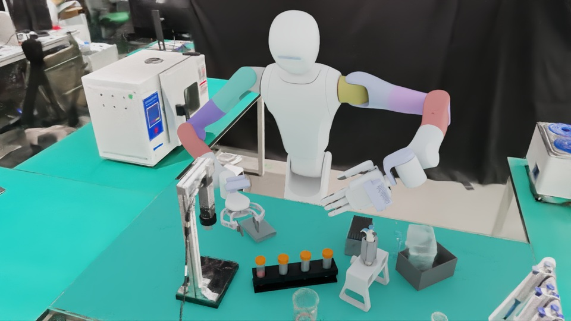
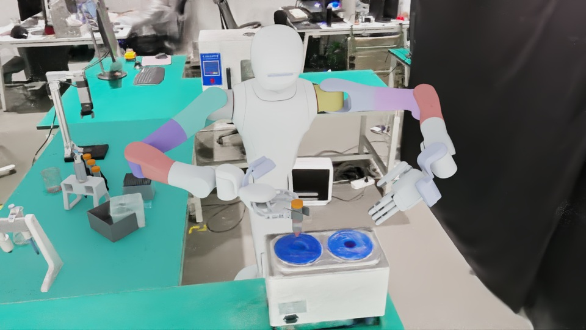

Operation site 2
◇Opening the laboratoryReading scene.json…
LAB 10.21 · 3D EXPLORER
Drag: orbit · Right drag / Shift-drag: pan · Scroll: zoom · Hover: preview · Click: inspectKeys: 2 / 3 · R to reset
Reference views

